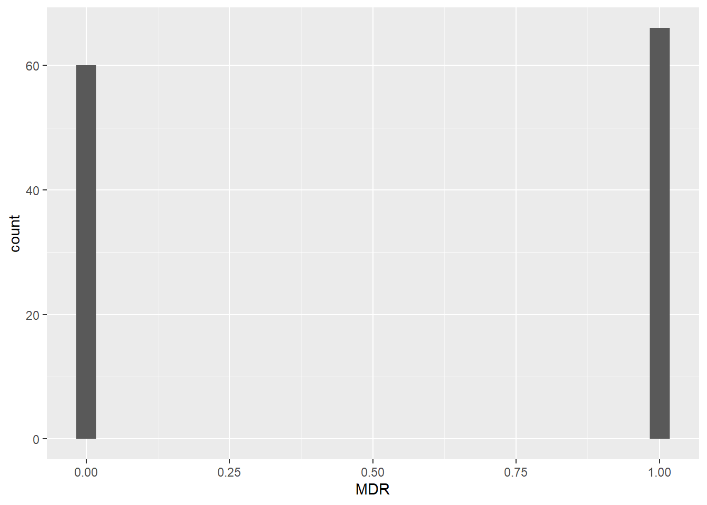
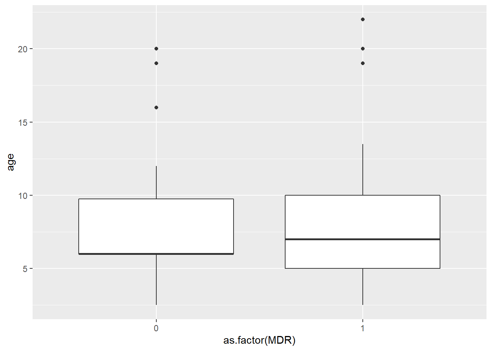
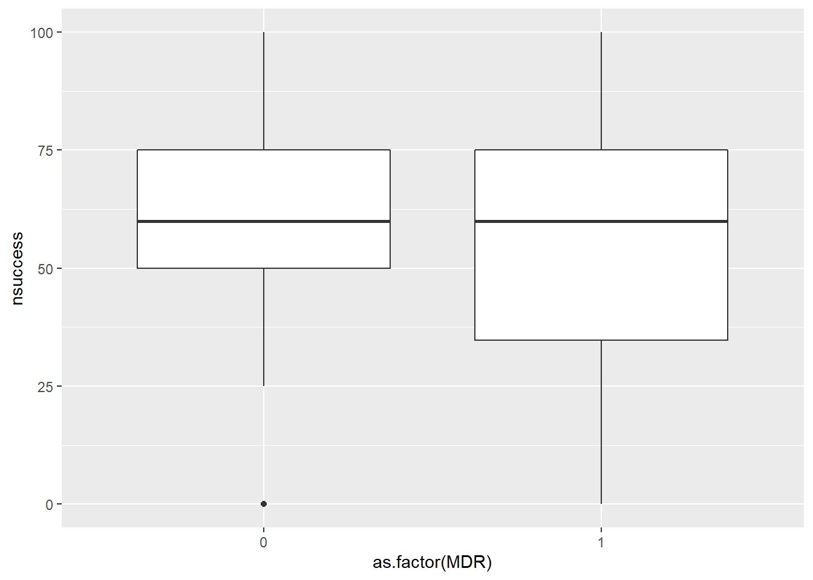
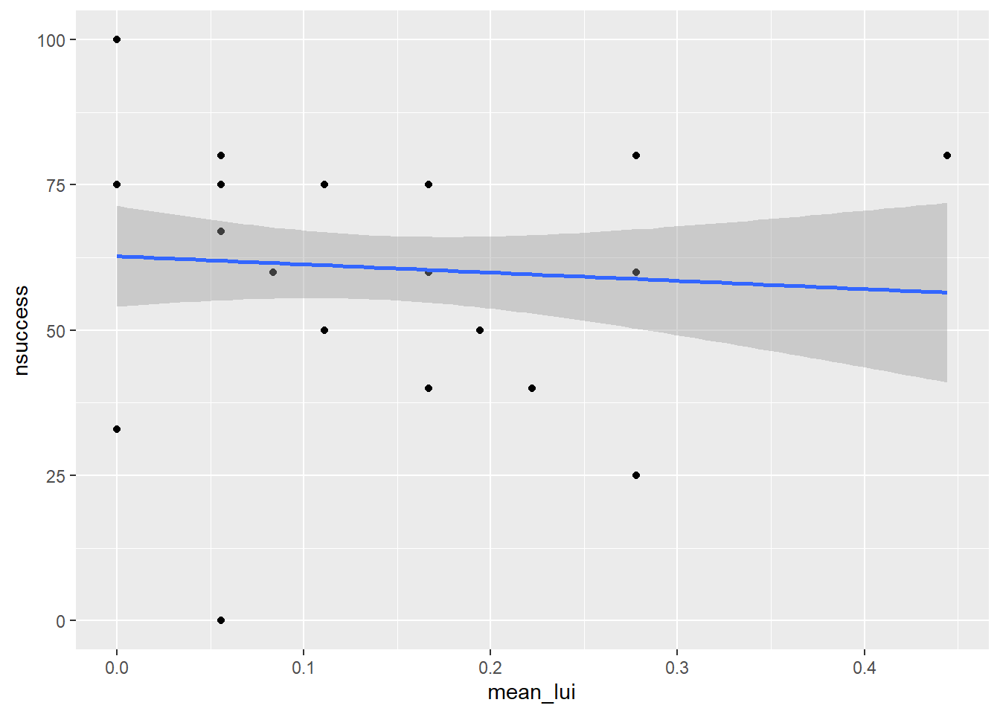
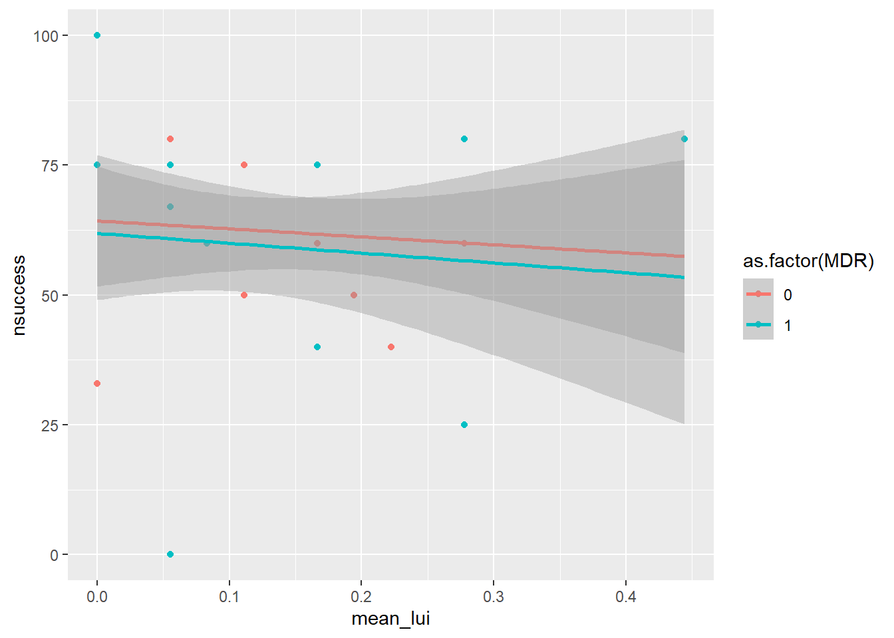
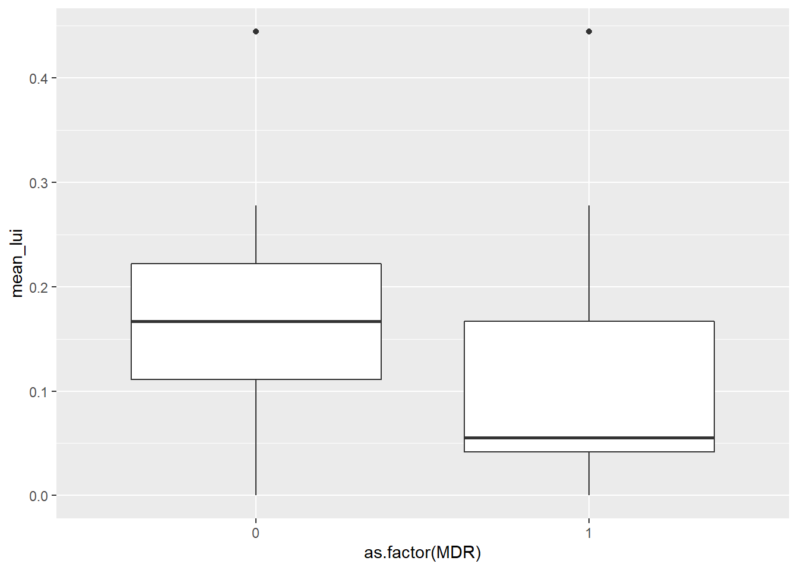

#load needed packages
library(here)
library(dplyr)
library(skimr)
library(ggplot2)White Stork Antimicrobial Resistance
Exploratory Analysis
This QMD file contains exploratory analysis for antimicrobial resistance data collected from White Stork (Ciconia ciconia) in Madrid, Spain.
Load Data/Packages
#load all data
stork_AMR_clean <- readRDS(here::here("data","processed_data","stork_AMR_clean.rds"))
#load 2021 data
stork_AMR_2021 <- readRDS(here::here("data","processed_data","stork_AMR_2021.rds"))Explore Data
First we want to make a table to take a quick look at a few variables that will be important later on.
table1 <- stork_AMR_2021 %>%
select(id, age, nsuccess, mean_lui, MDR) %>%
knitr::kable()
table1| id | age | nsuccess | mean_lui | MDR |
|---|---|---|---|---|
| 213 | 11.0 | 80 | 0.0555560 | 0 |
| 267 | NA | 100 | 0.0000000 | 1 |
| 215 | 4.0 | 33 | 0.0000000 | 1 |
| 269 | 6.0 | 25 | 0.2777780 | 0 |
| 203 | NA | 0 | NA | 1 |
| 207 | 10.0 | 60 | 0.2777778 | 0 |
| 265 | 13.5 | 60 | 0.0833333 | 1 |
| 275 | NA | 40 | NA | 1 |
| 285 | NA | 60 | NA | 0 |
| 219 | 4.0 | 75 | 0.0000000 | 1 |
| 235 | 5.0 | 75 | 0.1111111 | 0 |
| 257 | 6.0 | 50 | 0.1944444 | 0 |
| 217 | 6.0 | 40 | 0.2222220 | 1 |
| 259 | 8.0 | 40 | 0.1666670 | 0 |
| 237 | NA | 33 | 0.0000000 | 1 |
| 261 | 20.0 | 60 | 0.1666670 | 0 |
| 211 | 6.0 | 75 | 0.1666667 | 0 |
| 263 | 10.0 | 80 | 0.2777780 | 0 |
| 279 | 7.0 | 50 | 0.1111111 | 0 |
| 227 | NA | 75 | NA | 0 |
| 231 | 22.0 | 0 | 0.0555556 | 1 |
| 275b | NA | 40 | NA | 1 |
| 243 | 7.0 | 67 | 0.0555560 | 1 |
| 223 | NA | 75 | NA | 1 |
| 245 | 7.0 | 75 | 0.0555560 | 1 |
| 221 | NA | 75 | NA | 0 |
| 249 | 4.0 | 67 | 0.0555560 | 0 |
| 301 | 7.0 | 67 | 0.0555556 | 1 |
| 303 | 6.0 | 40 | 0.2222220 | 0 |
| 305 | 5.0 | 75 | 0.1111111 | 0 |
| 343 | 20.0 | 60 | 0.1666670 | 1 |
| 317 | NA | 100 | 0.0000000 | 0 |
| 313 | 13.5 | 60 | 0.0833333 | 1 |
| 319 | 7.0 | 50 | 0.1111111 | 0 |
| 233 | NA | 0 | NA | 0 |
| 205 | 7.0 | 80 | 0.4444440 | 0 |
| 299 | 6.0 | 75 | 0.1666667 | 1 |
| 297 | 11.0 | 80 | 0.0555556 | 0 |
| 295 | NA | 33 | 0.0000000 | 1 |
| 291 | 10.0 | 60 | 0.2777778 | 0 |
| 357 | 6.0 | 25 | 0.2777780 | 1 |
| 355 | 8.0 | 40 | 0.1666670 | 0 |
| 351 | NA | 75 | NA | 1 |
| 337 | NA | 75 | NA | 0 |
| 333 | 4.0 | 67 | 0.0555560 | 1 |
| 329 | NA | 75 | NA | 1 |
| 345 | NA | 60 | NA | 1 |
| 309 | 7.0 | 75 | 0.0555560 | 0 |
| 289 | 7.0 | 80 | 0.4444440 | 0 |
| 910 | 10.0 | 80 | 0.2777780 | 1 |
| 236 | 8.0 | 40 | 0.1666670 | 1 |
| 300 | 5.0 | 75 | 0.1111111 | 0 |
| 802 | NA | 75 | NA | 0 |
| 952 | NA | 33 | 0.0000000 | 0 |
| 1901 | 4.0 | 67 | 0.0555560 | 1 |
| 35 | 6.0 | 75 | 0.1666667 | 1 |
| 34 | 11.0 | 80 | 0.0555560 | 0 |
| 1907 | 6.0 | 50 | 0.1944444 | 0 |
| 143 | 4.0 | 75 | 0.0000000 | 1 |
| 157 | 10.0 | 60 | 0.2777778 | 1 |
| 301 | 7.0 | 80 | 0.4444440 | 1 |
| 109 | 6.0 | 40 | 0.2222220 | 0 |
| 234 | 7.0 | 75 | 0.0555560 | 1 |
| 240 | NA | 40 | NA | 1 |
| 2018 | NA | 75 | NA | 1 |
| 901 | 20.0 | 60 | 0.1666670 | 0 |
| A02 | NA | 60 | NA | 1 |
| 1908 | 13.5 | 60 | 0.0833333 | 1 |
| 911 | 6.0 | 25 | 0.2777780 | 1 |
| 12 | NA | 100 | 0.0000000 | 1 |
| 10 | 7.0 | 50 | 0.1111111 | 0 |
| 55 | 10.0 | 60 | 0.2777778 | 0 |
| 305 | NA | 75 | NA | 1 |
| 304 | 7.0 | 67 | 0.0555556 | 1 |
Plotting total MDR outcomes from both years.
stork_AMR_clean %>%
ggplot(aes(MDR))+
geom_histogram()`stat_bin()` using `bins = 30`. Pick better value with `binwidth`.
Plot MDR vs age of bird
stork_AMR_clean %>%
ggplot(aes(as.factor(MDR), age))+
geom_boxplot()Warning: Removed 30 rows containing non-finite values (stat_boxplot).
Plot MDR vs nest success
stork_AMR_clean %>%
ggplot(aes(as.factor(MDR), nsuccess))+
geom_boxplot()
Plotting mean landfill use index vs nest success
stork_AMR_2021 %>%
ggplot(aes(mean_lui, nsuccess))+
geom_point()+
geom_smooth(method = "lm")
Plotting mean landfill use index vs nest success, grouped by MDR outcome.
stork_AMR_2021%>%
ggplot(aes(mean_lui, nsuccess, color=as.factor(MDR)))+
geom_point()+
geom_smooth(method = "lm")
Plotting MDR vs mean landfill use index
stork_AMR_2021 %>%
ggplot(aes(as.factor(MDR), mean_lui))+
geom_boxplot()
There seems to be a slight decrease in the presence of MDR as landfill use index increases. Otherwise, there are not many apparent trends in the data off the bat. This exploration will help us as we move forward into a more robust statistical analysis.